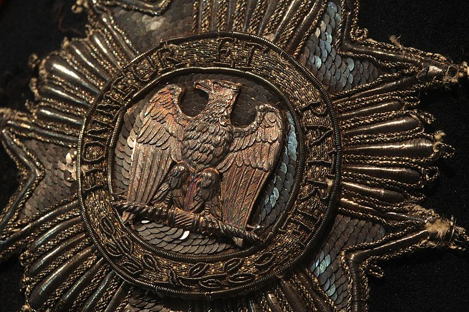
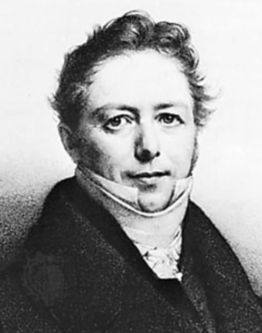
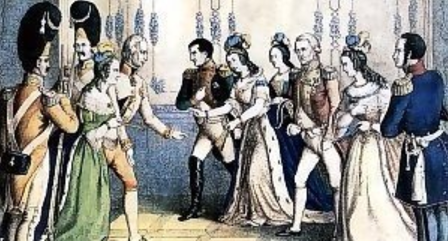
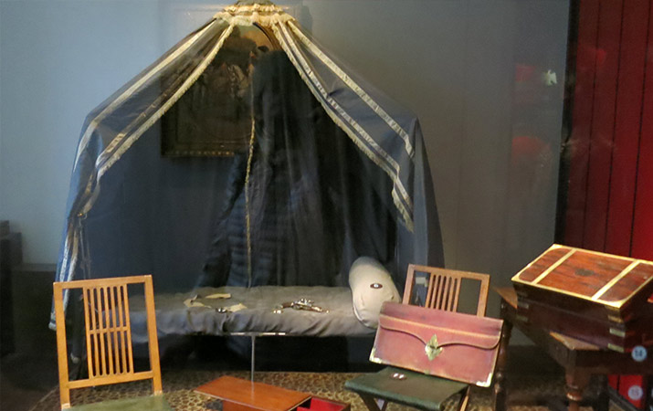

1812년 그랑다르메(Grande Armée)의 내부 상황 (마지막편)
게시: 2019-10-21T06:30:44+09:00
위에서 언급한 것처럼 징집된 병사들의 사기는 폴란드 내로 진입하기 전까지는 그리 나쁘지 않았습니다. 특히 이번에 새로 징집된 어린 병사들은 나폴레옹이 장려한 새로운 공립학교 제도 하에서 황제 폐하에 대한 충성심을 제도적으로 교육받고 성장한 아이들이다보니 더욱 그랬습니다. 병사들은 실질적인 혜택(?)도 꽤 쏠쏠히 기대할 수 있었습니다. 나폴레옹의 원정이 이어질 때마다 프랑스 국민들은 남편과 아들들이 (금지된 일임에도 불구하고) 점령지에서 노략질해온 돈과 귀중품을 가져오는 것에 익숙해져 있었습니다. 운이 좋지 않아 싸움터에서 횡재를 올리지 못한다고 하더라도 전쟁으로 난리가 난 적국의 마을과 도시에서는 꽤 값이 나가는 물품을 헐값에 사들인 뒤에 관세도 물지 않고 고향 마을로 가져와서 꽤 짭짤한 수익을 올리고 팔 수 있었습니다. 특히 그 중 용감하거나 운이 좋은 친구들이 연금이 딸린 레종도뇌르(Legion d'honneur) 훈장을 받거나 진급을 하거나 아예 장교 계급장을 받아오는 것도 드문 일은 아니었습니다. 생-도밍그(Saint-Domingue, 지금의 아이티) 출신의 한 크레올(Creole, 혼혈이라는 뜻이 아니라 현지 태생이라는 뜻) 병사는 다음과 같이 러시아 원정의 꿈에 부풀어 있었습니다. "거기서 난 무공을 세울 기회를 얻을 것이고, 훈장과 진급을 따내어 자랑스럽게 온 세상에 으시대며 보여줄 거다. 1년 안에 난 소령(chef de bataillon)이 될 거고 원정이 끝날 때 즈음엔 대령이 될 거다. 그 다음엔..."

(근위대 엽기병(Chasseurs a cheval) 대령 군복에 달린 레종도뇌르 휘장입니다. 나폴레옹 시절 레종도뇌르 훈장을 받은 사람은 약 48,000명으로서, 대부분은 군인이었습니다. 1802년 만들어진 이 훈장의 수상자들은 빠르게 늘어나서 생존 수상자 수는 1806년에 13,000명, 1814년에는 거의 2배인 25,000명에 달했습니다.) 이런 들뜬 분위기는 '철없는' 졸병 젊은이들에게만 국한되는 것은 아니었습니다. 파리의 많은 상류층/부유층 젊은이들, 즉 jeunesse doree(쥬네스 도레, '금칠을 한 젊은이')들이 '빽'을 이용하여 장교로 진급을 하고 부대를 옮겼는데, 주로 멋진 군복과 겉멋 때문에 기병대로 가거나 나폴레옹과 만날 가능성이 있는 참모진으로 배속되었습니다. 이런 젊은 장교들은 한탕주의에 들뜬 졸병들보다 오히려 더 전력에 도움이 되지 않았습니다. 이런 낙천적인 한탕주의는 군인들에게만 있는 것도 아니었습니다. 나폴레옹의 러시아 원정군은 역대급 규모를 자랑한 것만큼 보조 지원 인력도 많이 필요했는데, 거기에도 일확천금을 꿈꾸는 민간인들이 잔뜩 몰려들었습니다. 원정길에서의 보급품 구매와 징발, 분배 및 수송 등을 책임지는 군 보급관(commissaire)은 비록 군복을 입고 검과 권총 등으로 무장을 하긴 했지만 본래 신분은 어디까지나 민간인이었습니다. 이런 보급관 뿐만 아니라 서기관이나 비서 등 원정군에는 행정일을 하는 민간인이 수천 명에 달했습니다. 대부분은 험한 군사 원정길에는 처음 참여하는 사람들이었지만 이들의 사기는 하늘을 찌르는 듯 했습니다. 드 생-샤망(de Saint-Chamans) 대령은 이들에 대해 이렇게 불평하는 기록을 남겼습니다. "야전군 행정부에는 이렇게 전쟁이라고는 구경도 못해보았지만 한몫 단단히 챙기기 위해 이 원정에 참여했다고 큰소리로 떠들어대는 인간들이 가득했다." 야전군에 딸린 민간인이 이런 행정 사무직만 있는 것도 아니었습니다. 이들은 모두 제각각 한두 명씩의 하인들을 데리고 참전했습니다. 이런 하찮은 관직의 민간인들이 그랬으니, 장교들은 어떻겠습니까 ? 모든 장교들은 최소한 1대 이상의 짐마차를 대동했습니다. 이런 마차에는 장교가 품위를 유지하는데 필요한 물건들, 즉 여분의 군복과 여분의 무기, 책과 지도, 식료품과 생활 편의품들이 실려있었습니다. 그리고 최소한 한 명 이상의 하인이 딸려 있었고, 마차를 모는 마부도 따로 있었습니다. 소위 중위 나부랭이들이 이 모양이었으니 장군 정도 되면 클래스가 달랐습니다. 엄격하기로 소문난 다부(Davout) 원수의 제1 군단 산하 제5 사단의 지휘관은 콩팡(Compans)이라는 이름의 장군이었는데, 이 분은 결코 허영에 물든 쾌락주의자가 아니었고 오히려 다부의 부하답게 꽤 검소한 라이프 스타일을 가진 군인이었습니다. 그런데도 이 분이 개인적으로 원정에 동반한 민간인 식솔들은 다음과 같았습니다. 급사장(maitre d'hotel) - 루이(Louis) 실내 시종(valet de chambre) - 뒤발(Duval) 마부(cocher) - 보(Vaud) 시종(valet) - 시몽(Simon)과 루이(Louis) 경호원(gendarme) - 트루이예(Trouillet) 기타 하인 - 피에르(Pierre), 발렝텡(Valentin), 장비에(Janvier) 승객용 마차를 끄는 말 5마리 사람이 타는 말 6마리 짐말 30여 마리 승객용 마차 1대 짐마차 여러대 장군님께서 원정을 떠날 때 이 정도의 개인 식솔을 거느리는 것은 당시 유럽 사회에서 놀라운 것은 아니었습니다. 그러나 1796년 이탈리아 원정을 떠날 때의 나폴레옹 휘하 장군들은 이런 호화스러운 살림살이를 끌고 다닌 것은 분명히 아니었습니다. 나폴레옹 본인조차 병사들의 빵 수프나 모닥불에 구운 감자를 얻어 먹거나 아예 쫄쫄 굶는 일이 많았으니까요. 항상 가볍게 움직이던 나폴레옹의 부하 장군들이 어쩌다 이렇게 오스트리아 장군이나 프로이센 장군과 별다를 바 없게 되어버렸을까요 ? 일이 이렇게 된 것에는 무엇보다 나폴레옹 본인의 잘못이 가장 컸습니다. 그는 항상 유럽 왕조들의 진짜 왕들 앞에서 코르시카 출신의 벼락 출세꾼 또는 찬탈자라는 컴플렉스가 있었고, 그 때문에라도 황제가 된 이후 부하들에게 '진짜 귀족들처럼' 호화로운 복장 및 우아한 예절과 사치스러운 살림살이를 갖추도록 장려했습니다. 어떻게 보면 그는 여관집 아들 채소 가게 아들 출신들이었던 부하들이 좀 창피했던 것 같습니다. 나폴레옹의 그런 장려책에 대해 마세나나 베르티에, 술트 등과 같은 부하들도 매우 기뻐하며 그런 사치와 향락에 빠져들었습니다. 대부분 40대였던 그의 부하 원수들은 파리에서의 우아하고 편안한 생활에 익숙해져 배에 기름도 붙은 상태였습니다. 이제 험란할 것이 뻔한 새로운 원정을 떠난다고 해서 과거처럼 더 승진할 자리도 없어 보였으므로, 이들은 그다지 열의가 있지는 않았습니다. 훗날 나폴레옹 관련 회고록을 남겨 유명해진 펭 남작(Agathon Jean Francois Fain)은 당시 나폴레옹 직속 비서이자 기록관이었는데, 그는 이때 상황에 대해 부하 장군들이 과거와는 달리 내키지 않아하는 태도로 이번 원정을 준비하는 것에 대해 나폴레옹이 꽤 놀랐다고 적어 놓았습니다.

(펭 남작입니다. 영국 영화배우 제임스 맥어보이와 좀 닮았네요. 그는 기록관답게 은퇴 이후 나폴레옹 관련되어 여러편의 책을 냈는데, 특히 1908년에 영어로 번역되어 출간된 Memoires du Baron Fain, Premier Secretaire du Cabinet de l'Empereur, 즉 '황제 내각의 수석 비서관 펭 남작의 회고록'이 매우 유명했습니다.) 특히 이번 원정은 상대가 머나멀 뿐만 아니라 끔찍하게 넓은 러시아였으므로, 정말 장기간 원정이 되리라고 다들 예상했습니다. 그러다보니 다들 과거에 비해 훨씬 더 많은 비축품과 각종 편의시설을 챙겨가려 했습니다. 그건 중위 나부랭이부터 군단장들까지 다 일치된 태도였습니다. 그런데 그에 대해서는 나폴레옹조차 예외가 아니었습니다. 이건 꼭 나폴레옹을 비난할 일은 아니었습니다. 나폴레옹은 비록 국민의 지지에 기반한 군주이긴 했지만, 어쨌건 독재자였습니다. 근본적으로 독재자의 제1 걱정거리는 권력 유지였고, 나폴레옹처럼 자주 먼 군사 원정길에 나서야 했던 독재자는 항상 권력의 중심인 권력기관, 그러니까 파리와의 연락을 유지하기 위해 안간힘을 써야 했습니다. 그런데 이번 원정은 목적지가 러시아였습니다. 언제나처럼 나폴레옹의 이동 사령부와 파리를 연결해줄 쾌속 파발마 네트워크가 촘촘히 연결되었지만, 그것만으로는 부족했습니다. 그래서 나폴레옹은 이번 원정에는 자신의 궁정 기관 중 핵심 인원을 아예 다 데리고 갔습니다. 그러다보니 그런 관료 인원들이 원정길에서도 정상적으로 일하고 생활하도록 하려면 필요한 살림살이가 보통이 아니었습니다. 특히 러시아 원정을 떠나는 길목인 드레스덴(Dresden)에 나폴레옹은 오스트리아 황제 프란츠를 포함한 자신의 동맹국 및 위성국들의 군주들을 모두 소집하여 자신의 위세를 온 유럽에 각인시켰습니다. 그들에게 체면을 차리기 위해서라도 나폴레옹의 행차에는 으리으리한 규모의 인원과 짐이 따라다녔습니다.

(1812년 5월, 러시아로 향하는 길인 작센 왕국의 수도 드레스덴(Dresden)에서 오스트리아 황제 프란츠 1세와 황비 루도비카를 만나는 나폴레옹과 마리-루이즈입니다. 당대 최고의 영웅인 나폴레옹의 아내가 된데다 호화로운 파리의 궁정 생활에 아주 흠뻑 빠져 자아가 부풀어 오를대로 올랐던 마리-루이즈는 여기서 아버지인 프란츠 1세를 대하는 것인데도 목에 깁스를 한 것처럼 도도하고 오만하게 굴어 많은 이들의 빈축을 샀다고 합니다. 오른쪽의 남녀는 작센 국왕 프리드리히 아우구스트 1세 부부입니다.)
나폴레옹의 원정길 살림살이는 바로 직전까지 러시아 대사였다가 돌아온 콜랭쿠르(Caulaincourt)가 마복시(Grand Ecuyer) 직을 맡아 준비했습니다. 나폴레옹의 개인 화물에는 다양한 텐트와 야전 침대, 책상 및 필기류, 옷장, 은식기와 조리 기구, 식료품과 와인류, 각종 상비약 상자 등이 딸려 있었습니다. 이런 짐들의 규모는 그 수송 엔진 규모를 보면 대략 짐작이 가실 것입니다. 이 짐들은 약 400마리의 짐말과 40여 마리의 노새가 끌거나 실었고, 사람이 타는 말만도 130여 마리가 있었습니다. 이 모든 것은 나폴레옹의 근위대와는 별도로 순수하게 나폴레옹 개인의 종군 민간인들만을 위한 것이었습니다. 이들 대부분은 결국 제대로 써보지도 못했지요.

(이건 파리의 군사박물관(Musee de l’Armee)에 전시된 나폴레옹의 개인 텐트 및 책상의 재현품이라고 합니다. 나폴레옹이 러시아에 싣고 간 것들은 이런 것들보다 훨씬 더 호화로왔을 것입니다.)
물론 나폴레옹은 나폴레옹이었습니다. 나폴레옹은 원정에서의 편한 생활을 위해 살림살이만 신경쓴 것은 당연히 아니었습니다. 백전노장인 그는 늘 그래왔던 것처럼 특히 정보 수집에 열을 올렸습니다. 나폴레옹은 각 부대마다 독일어나 폴란드어, 러시아어를 할 줄 아는 장교들을 배속시키고 또 장교들에게 러시아어 수업을 받도록 독려했습니다. 어차피 러시아군 장교들은 거의 100% 모두 프랑스어를 꽤 잘 했기 때문에 러시아군과의 의사소통에는 별 문제가 없었습니다만, 러시아군 부사관들이나 병사들을 포로로 잡을 경우에 대비한 것이었습니다. 뿐만 아니라 간첩들도 러시아 서부 지역까지 쫙 풀어서 정보망을 넓히고 군수품 담당부(Depot de la Guerre)에게 동부 폴란드는 물론 리투아니아와 러시아 주요 지역의 확대 지도를 대량 인쇄하도록 했습니다. 이런 지도는 철저히 군용으로 만들어 도로와 강, 늪지와 숲 등에 중점을 두었습니다. 나중에 보시겠습니다만 이로 인해 러시아군이 가진 러시아 지도보다 프랑스군이 가진 러시아 지도가 더 정확한, 웃기는 상황이 벌어지기도 했습니다. 나폴레옹이 이렇게 나름대로 철저하게 침공 준비를 하는 동안, 러시아군은 과연 어떤 철통 방어 준비를 하고 있었을까요 ? 그게... 또 좀 그랬습니다.
Source : 1812 Napoleon's Fatal March on Moscow by Adam Zamoyski https://en.wikipedia.org/wiki/Agathon_Jean_Fran%C3%A7ois_Fain https://en.wikipedia.org/wiki/Legion_of_Honour http://www.napoleonguide.com/legionorg.htm https://en.wikipedia.org/wiki/Armand-Augustin-Louis_de_Caulaincourt https://seetheworld.travelforkids.com/napoleon-bonaparte-paris-with-kids/